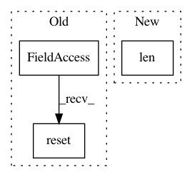

36b018daf15ae8af90cf982fd01bff2008ced3bd,catalyst/dl/experiments/runner.py,Runner,_run_loader,#Runner#Any#,120
Before Change
self._handle_runner_metrics()
self.state.metrics.end_batch()
self.timers.reset()
self.timers.start("base/batch_time")
self.timers.start("base/data_time")
After Change
self.state.batch_size = loader.batch_size
self.state.step = (
self.state.step
or self.state.epoch * len(loader) * self.state.batch_size
)
self.state.timer.reset()
In pattern: SUPERPATTERN
Frequency: 3
Non-data size: 3
Instances
Project Name: Scitator/catalyst
Commit Name: 36b018daf15ae8af90cf982fd01bff2008ced3bd
Time: 2019-02-25
Author: scitator@gmail.com
File Name: catalyst/dl/experiments/runner.py
Class Name: Runner
Method Name: _run_loader
Project Name: PacktPublishing/Deep-Reinforcement-Learning-Hands-On
Commit Name: f33446be0e9e8deb631477db30f20ac436491f24
Time: 2018-02-17
Author: max.lapan@gmail.com
File Name: ch16/01_cartpole_es.py
Class Name:
Method Name:
Project Name: oval-group/logger
Commit Name: 6644369db2fe27dad2c0c88388b861aafb1baafd
Time: 2017-11-06
Author: leonardbj@hotmail.fr
File Name: examples/example.py
Class Name:
Method Name: